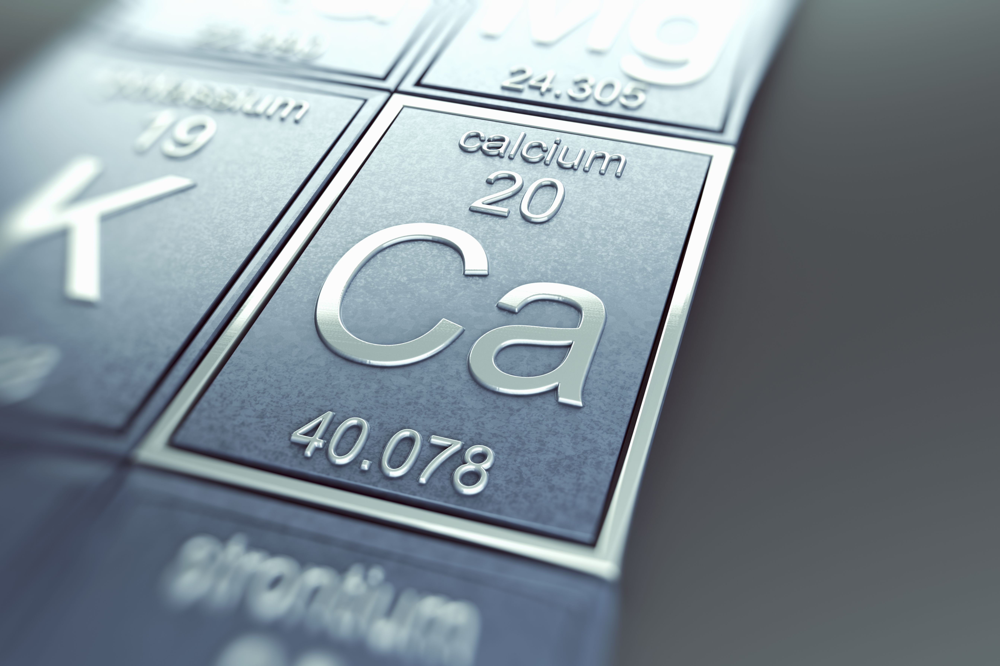
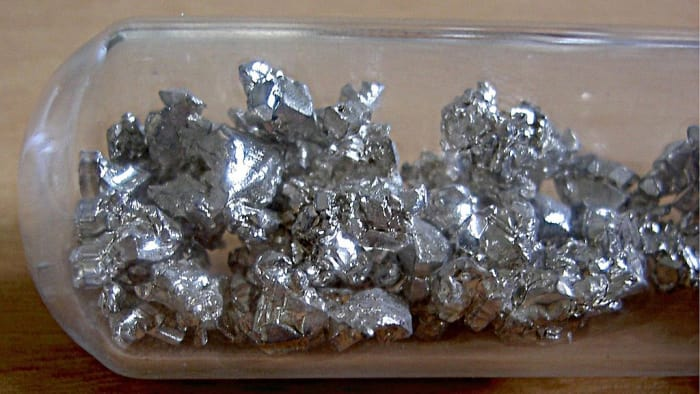

Calcium
20Ca
About Calcium
Calcium is the most abundant metal and the fifth-most abundant element in the human body.Calcium ions outside cells are important for maintaining the potential difference across excitable cell membranes, protein synthesis, and bone formation.The most common calcium compound on Earth is calcium carbonate
Physical Properties
Calcium metal melts at 842 °C and boils at 1494 °C Calcium is harder than lead but can be cut with a knife with effort. Its density of 1.55 g/cm3 is the lowest in its group.

Chemical Property
The chemistry of calcium is that of a typical heavy alkaline earth metal. For example, calcium spontaneously reacts with water. It also reacts with the oxygen and nitrogen in the air to form a mixture of calcium oxide and calcium nitride.It quickly forms a hydration coating in moist air. Due to the large size of the calcium ion (Ca2+), high coordination numbers are common.

Food source
Foods rich in calcium include dairy products, such as yogurt and cheese, sardines, salmon, soy products, kale, and fortified breakfast cereals
Nutrition
Calcium is a common constituent of multivitamin dietary supplements,but the composition of calcium complexes in supplements may affect its bioavailability which varies by solubility of the salt involved: calcium citrate, malate, and lactate are highly bioavailable, while the oxalate is less. Other calcium preparations include calcium carbonate, calcium citrate malate, and calcium gluconate.The intestine absorbs about one-third of calcium eaten as the free ion, and plasma calcium level is then regulated by the kidneys.
Bone Diseases
As calcium is required for bone development, many bone diseases can be traced to the organic matrix or the hydroxyapatite in molecular structure or organization of bone. Osteoporosis is a reduction in mineral content of bone per unit volume, and can be treated by supplementation of calcium, vitamin D, and bisphosphonates. Inadequate amounts of calcium, vitamin D, or phosphates can lead to softening of bones, called osteomalacia.